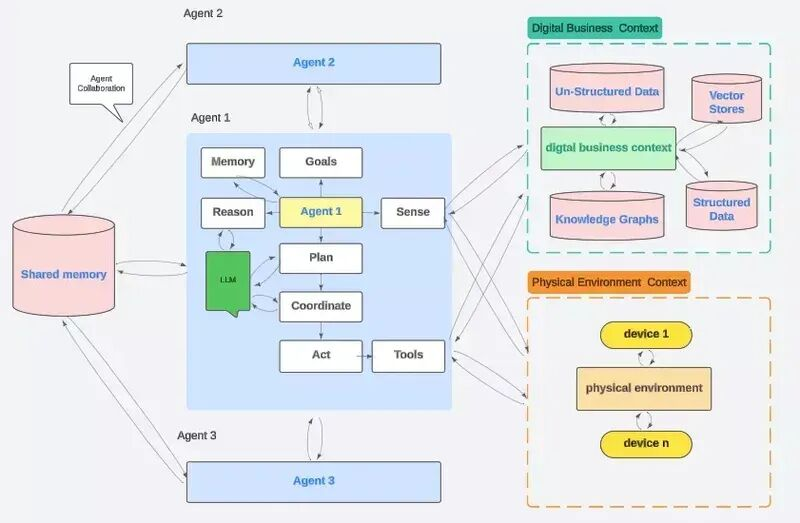
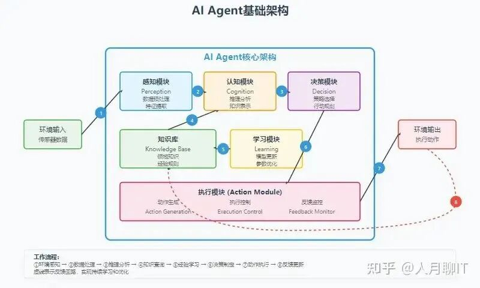
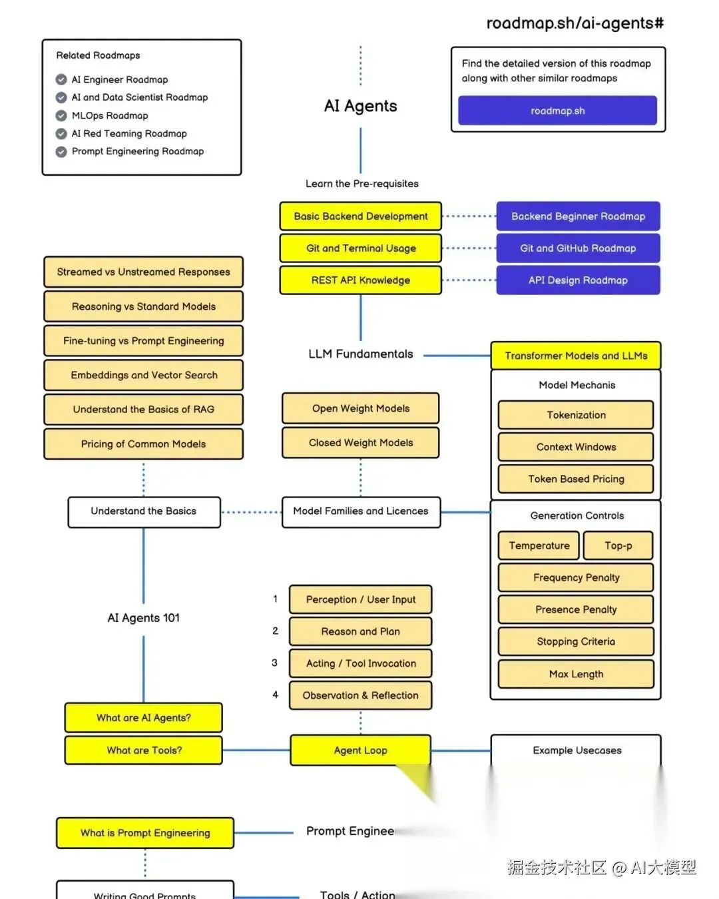
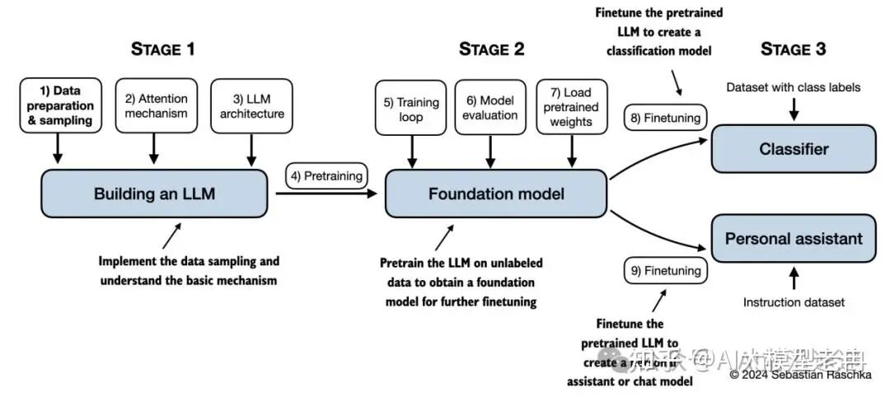
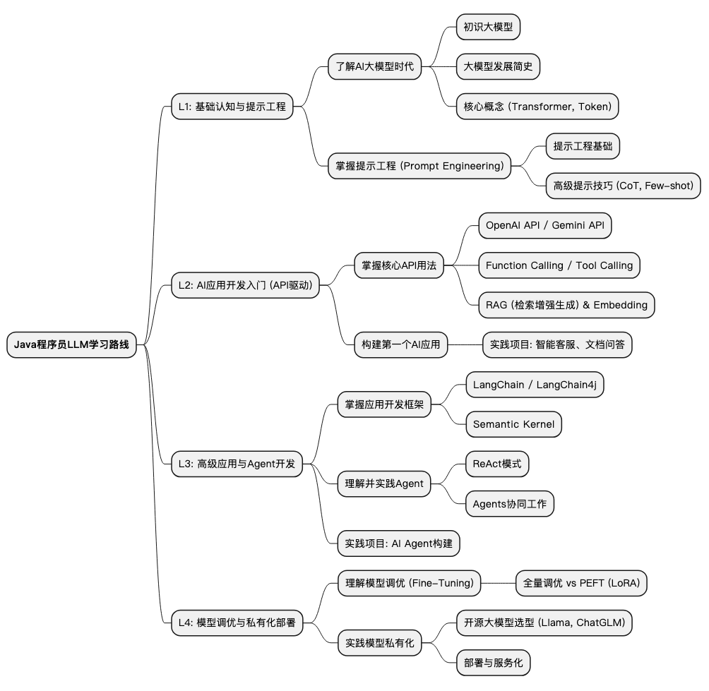
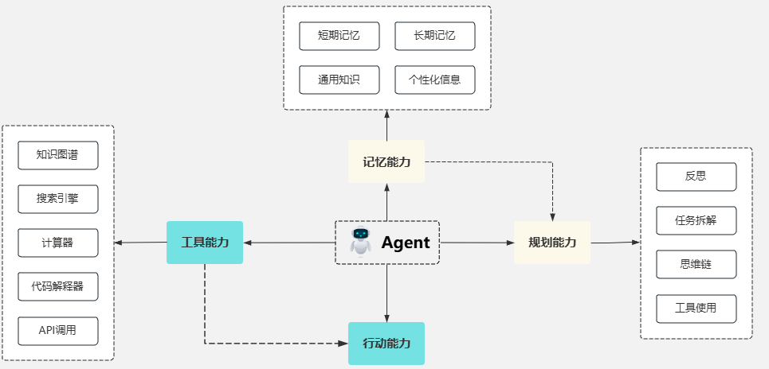
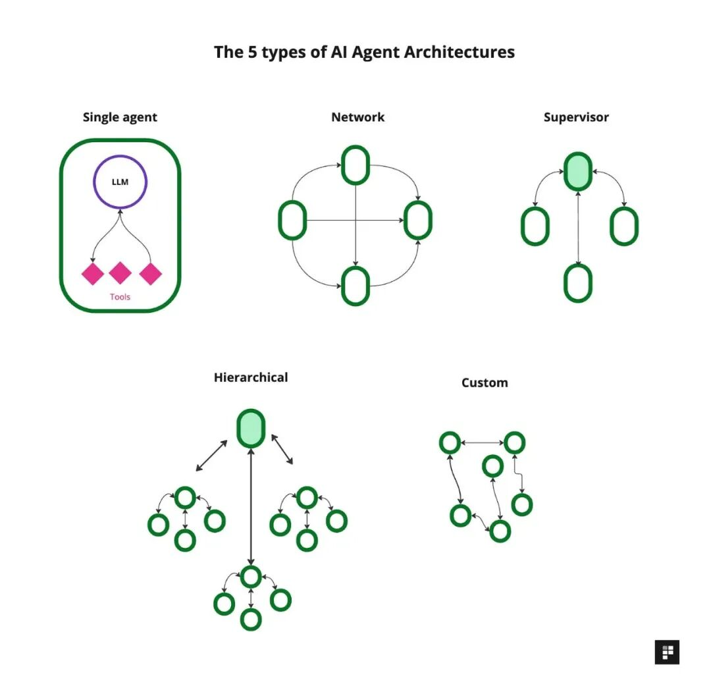
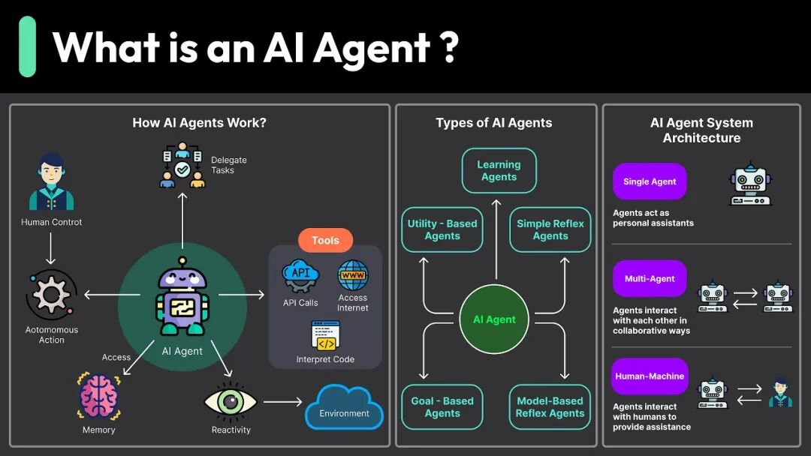

导读：2026年，AI Agent浪潮席卷而来。有人还在用ChatGPT聊天，有人已经设计出能自主决策的智能体系统。差距在哪里？这篇文章告诉你如何成为稀缺的Agent架构师。
📌 开篇：为什么你必须关注Agent架构师？
先来看一组震撼的数据：
• 2026年，AI Agent架构师薪资比传统架构师高出40% • 采用Agent架构的系统，上线周期缩短75%，维护成本降低75% • 企业级Agent系统需求爆发式增长，人才缺口超过80%
一、什么是Agent架构师？
1.1 从LLM到Agent：一场范式革命
在理解Agent架构师之前，我们先要明白：AI正在经历一场从"工具"到"伙伴"的革命。
传统AI应用（LLM）：
• 你提问 → AI回答 • 被动响应，单次交互 • 需要人工持续输入
AI Agent：
• 你给目标 → AI自主规划、执行、反思 • 主动决策，持续协作 • 能调用工具、记忆历史、与环境交互
举个具体例子：
❌ LLM方式：你问"帮我规划一次日本旅行"，AI给你一份行程建议。
✅ Agent方式：你说"帮我规划并预订一次日本旅行，预算2万元"，Agent会：
1. 自主搜索机票、酒店、景点信息 2. 根据你的偏好优化行程 3. 调用API完成预订 4. 生成详细的旅行手册 5. 旅行中实时调整计划
这就是差距：从"回答问题"到"完成任务"。
1.2 Agent架构师的核心职责
Agent架构师不是简单的"代码编写者"，而是"智能体系统的设计师"。
主要职责包括：
1. 系统设计：设计多智能体协作架构，让多个Agent高效配合 2. 能力编排：规划Agent的感知、决策、执行、记忆等模块 3. 工具集成：将企业现有系统（CRM、ERP等）转化为Agent可调用的技能 4. 性能优化：确保Agent系统稳定、高效、可控 5. 安全治理：设计Guardrails（护栏），防止Agent做出危险决策

一句话总结：Agent架构师是"AI系统的总设计师"，需要同时懂技术、懂业务、懂系统。
二、为什么2026年是最佳入局时机？
2.1 行业趋势：从Demo到落地
2024-2025年：Agent概念爆发期，各种框架涌现（LangChain、AutoGPT、CrewAI等）
2026年：商业落地元年，企业开始大规模应用Agent系统
证据：
• 阿里云、腾讯云、字节跳动等大厂都在组建Agent团队 • 金融、电商、客服、研发等领域出现大量Agent落地案例 • MCP（Model Context Protocol）协议标准化，Agent集成企业系统变得简单
2.2 人才供需：严重失衡
供给侧：
• 大部分开发者还停留在"调API"阶段 • 真正懂Agent系统设计的人才凤毛麟角
需求侧：
• 企业急需能用Agent重构业务流程的人才 • 从"工具使用者"升级为"系统指挥者"
结果：供需失衡 → 薪资暴涨
2.3 技术成熟：门槛降低
以前：需要深厚的AI算法功底
现在：
• 大模型API成熟，无需自己训练模型 • 低代码平台（如Dify、Coze）让快速原型成为可能 • 开源框架丰富，学习资源充足
这意味着：即使你是初学者，只要方法正确，6-12个月就能入门
三、Agent架构师技能图谱：三层能力模型
基于行业最佳实践，我将Agent架构师的技能树划分为三个层级：

Level 1：胶水层与编排（入门基础）
这是入门的基础。你需要掌握：
1. 提示工程（Prompt Engineering）
• 基础技巧：角色设定、Few-shot、思维链（CoT） • 高级技巧：ReAct模式、自洽性（Self-Consistency）、反思（Reflection） • 实战：设计能让Agent稳定执行的Prompt模板
2. 工作流编排
• 理解Agent的核心循环：感知 → 思考 → 行动 → 观察 • 掌握顺序工作流、并行工作流、条件分支 • 工具：LangChain、LangGraph、Flowise
3. API集成能力
• RESTful API调用 • 函数调用（Function Calling） • 将外部工具（搜索、计算器、代码执行器）接入Agent

Level 1目标：能搭建单Agent应用，完成简单任务自动化。
Level 2：系统层（进阶核心）
这是区分"搭建师"和"架构师"的关键层。
1. 记忆系统设计
• 短期记忆：对话上下文管理 • 长期记忆：向量数据库（Pinecone、Milvus、Chroma） • 知识图谱：结构化知识存储与检索 • RAG（检索增强生成）：让Agent"记得住、找得到"
2. 推理框架
• 任务分解（Task Decomposition） • 规划算法：ToT（Tree of Thoughts）、GoT（Graph of Thoughts） • 自我纠错：Agent能发现自己的错误并修正
3. 多Agent协作
• 架构模式： • 单一Agent：一个Agent完成所有任务 • 监督者模式：一个主Agent协调多个子Agent • 层级模式：树状组织结构 • 网络模式：Agent间自由通信 • 协作框架：CrewAI、AutoGen、LangGraph
4. 数据工程
• 向量嵌入（Embedding）原理与应用 • 数据清洗与预处理 • 性能优化：索引策略、缓存机制
Level 2目标：能设计复杂的多Agent系统，解决企业级问题。
Level 3：基础层（高阶能力）
这是顶级架构师的护城河。
1. 模型理解与优化
• 深入理解LLM工作原理（Transformer、注意力机制） • 模型选择：开源vs闭源、性能vs成本 • 微调（Fine-tuning）：LoRA、QLoRA等参数高效微调技术
2. 系统架构设计
• 高可用设计：容错、降级、重试机制 • 性能优化：并发处理、异步执行、资源调度 • 可观测性：日志、监控、追踪（Observability）

3. 安全与治理
• Guardrails设计：防止Agent做出有害行为 • 伦理合规：偏见检测、公平性保障 • 权限控制：Agent能做什么、不能做什么
4. 业务重构能力
• 这是最容易被忽视但最重要的能力 • 理解业务流程，找到Agent的最佳切入点 • 从"自动化"到"智能化"的跃迁 • 设计人机协作的新范式
Level 3目标：能从0到1设计企业级Agent系统，实现业务价值最大化。
四、从0到1：四阶段成长路径
基于多位成功转型者的经验，我总结了一套可落地的进阶路径：

阶段1：基础夯实（1-3个月）
适合人群：编程基础薄弱或AI零基础
学习目标：
• 掌握Python核心语法、API调用、文件处理 • 理解LLM基本原理和使用方法 • 能编写简单的自动化脚本
具体行动：
第1个月：编程基础
• Python基础：变量、函数、类、异常处理 • 常用库：requests、json、asyncio • 实战：写一个爬虫或自动化工具
第2个月：LLM入门
• 理解Transformer、Token、上下文窗口 • 学习提示工程基础 • 实战：用OpenAI API或国产大模型（通义千问、文心一言）开发聊天机器人
第3个月：Agent初探
• 学习LangChain基础 • 理解Agent的核心组件：工具、记忆、规划 • 实战：搭建一个能调用搜索工具的问答Agent
推荐资源：
• 书籍：《Python编程：从入门到实践》 • 课程：吴恩达《Prompt Engineering for Developers》 • 文档：LangChain官方文档
里程碑：能独立开发一个能调用外部工具的简单Agent。
阶段2：Agent核心技术（3-6个月）
适合人群：有编程基础，想快速进入Agent开发
学习目标：
• 掌握RAG技术栈 • 熟练使用主流Agent框架 • 能开发生产级的单Agent应用
具体行动：
第4个月：RAG技术
• 理解Embedding原理 • 学习向量数据库（Chroma、Pinecone） • 实战：搭建一个基于企业知识库的智能客服
第5个月：Agent框架深入
• LangChain高级用法：Agent Executor、Toolkits • 学习ReAct模式、Plan-and-Execute模式 • 实战：开发一个代码生成Agent或数据分析Agent
第6个月：记忆与状态管理
• 短期记忆与长期记忆的设计 • 对话状态追踪 • 实战：开发一个有记忆的个性化助手
推荐资源：
• 课程：LangChain官方教程 • 项目：GitHub上的开源Agent项目 • 社区：Hugging Face、LangChain Discord
里程碑：能开发一个完整的、有记忆和工具调用能力的Agent应用。
阶段3：高阶应用（6-12个月）
适合人群：已掌握单Agent开发，想进阶多Agent系统
学习目标：
• 掌握多Agent协作架构 • 理解系统设计与性能优化 • 能设计复杂的企业级Agent系统
具体行动：
第7-8个月：多Agent系统
• 学习CrewAI、AutoGen框架 • 理解不同协作模式（监督者、层级、网络） • 实战：开发一个多Agent协作的内容创作系统（如：研究员+写手+编辑）
第9-10个月：系统集成
• 学习MCP协议，集成企业系统（CRM、ERP） • API设计与微服务架构 • 实战：将Agent接入企业工作流
第11-12个月：性能与可观测性
• 异步处理、并发控制 • 日志、监控、追踪系统 • 实战：优化一个生产系统，提升性能和稳定性
推荐资源：
• 论文：《A Survey of Frontiers in LLM Reasoning》 • 案例：Anthropic、OpenAI的Agent系统架构分享 • 工具：LangSmith（调试与监控）
里程碑：能设计并实现一个多Agent协作的企业级系统。
阶段4：行业实战（持续迭代）
适合人群：已掌握核心技术，想成为顶级架构师
学习目标：
• 深耕特定行业（金融、电商、医疗等） • 掌握业务重构能力 • 建立技术影响力
具体行动：
行业深耕
• 选择一个垂直领域，理解其业务流程 • 研究该领域的Agent落地案例 • 积累行业知识和最佳实践
系统思维
• 学习领域驱动设计（DDD） • 理解企业架构（EA） • 将Agent视为企业数字化系统的一部分
影响力建设
• 写技术博客，分享经验 • 参与开源项目 • 在技术社区建立个人品牌
里程碑：成为某个领域的Agent架构师专家，能主导企业级AI转型项目。
五、核心技能详解：四大支柱
无论你在哪个阶段，这四大核心技能是Agent架构师的必修课：

支柱1：推理框架（Reasoning）
什么是推理框架？
简单说，就是让Agent学会"思考"，而不是简单地"回答问题"。
核心能力：
1. 任务分解（Task Decomposition）
• 将复杂任务拆解成可执行的子任务 • 例如："开发一个网站" → "设计UI" + "写前端代码" + "部署上线"
2. 规划算法
• 思维链（Chain of Thought, CoT）：让Agent一步步推理 • 思维树（Tree of Thoughts, ToT）：探索多种可能性 • 思维图（Graph of Thoughts, GoT）：更复杂的推理网络
3. 自我反思（Reflection）
• Agent能评估自己的输出 • 发现错误并修正 • 持续改进
实战技巧：
# 示例：ReAct模式（Reasoning + Acting）
# Prompt模板
prompt = """
你是一个智能助手。在回答问题前，请先思考：
1. 我需要哪些信息？
2. 我可以调用哪些工具？
3. 我应该如何执行？
任务：{task}
请按照以下格式执行：
Thought: 我现在需要...
Action: {tool_name}
Action Input: {tool_input}
Observation: {tool_output}
...（重复Thought/Action/Observation）
Thought: 我现在知道答案了
Final Answer: {最终答案}
"""学习资源：
• 论文：《ReAct: Synergizing Reasoning and Acting in Language Models》 • 实践：LangChain的ReAct Agent
支柱2：记忆系统（Memory）
为什么记忆如此重要？
没有记忆的Agent，就像"金鱼"——每次对话都是第一次。好的记忆系统，让Agent有"连续性"和"个性化"。
记忆的类型：
1. 短期记忆（Short-term Memory）
• 存储当前对话的上下文 • 实现方式：对话历史列表 • 限制：Token数量限制
2. 长期记忆（Long-term Memory）
• 存储历史交互、用户偏好、知识库 • 实现方式：向量数据库 • 特点：可检索、可扩展
3. 工作记忆（Working Memory）
• 当前任务的中间状态 • 实现方式：结构化数据（JSON、数据库）
技术实现：
# 示例：使用Chroma向量数据库实现长期记忆
from langchain.vectorstores import Chroma
from langchain.embeddings import OpenAIEmbeddings
# 创建向量存储
embeddings = OpenAIEmbeddings()
vectorstore = Chroma(
collection_name="long_term_memory",
embedding_function=embeddings,
persist_directory="./memory_db"
)
# 存储记忆
vectorstore.add_texts(
texts=["用户喜欢Python编程"],
metadatas=[{"user_id": "123", "type": "preference"}]
)
# 检索记忆
relevant_memories = vectorstore.similarity_search(
"用户的技术背景",
k=3
)最佳实践：
• 记忆分层：重要信息长期存储，临时信息定期清理 • 记忆压缩：将长对话总结成关键点 • 记忆检索：基于语义相似度，而非关键词匹配
学习资源：
• 工具：Chroma、Pinecone、Milvus • 教程：LangChain Memory模块文档
支柱3：工具使用（Tool Use）
Agent的强大之处，在于它能"动手"，而不只是"动嘴"。
工具的类型：
1. 信息获取工具
• 搜索引擎（Google、Bing） • 数据库查询 • API调用
2. 计算工具
• 计算器 • 代码解释器（Python执行） • 数据分析工具（Pandas、NumPy）
3. 业务工具
• CRM系统（客户管理） • ERP系统（企业资源） • 邮件系统、日历系统
工具集成方法：
# 示例：LangChain工具定义
from langchain.tools import tool
@tool
def search_weather(city: str) -> str:
"""查询城市天气"""
# 调用天气API
response = requests.get(f"https://api.weather.com/{city}")
return response.json()["temperature"]
@tool
def calculate(expression: str) -> str:
"""计算数学表达式"""
return str(eval(expression))
# 将工具注册到Agent
tools = [search_weather, calculate]MCP协议（Model Context Protocol）：
这是2026年的新趋势，让Agent标准化地调用企业工具。
核心思想：
• 将企业系统（CRM、ERP等）封装成标准技能 • Agent通过MCP协议发现和调用技能 • 无需修改后端代码，快速集成
学习资源：
• 文档：Model Context Protocol官方文档 • 案例：阿里云MCP服务实践
支柱4：多Agent协作（Multi-Agent Collaboration）
为什么需要多Agent？
单Agent的局限：
• 能力有限，难以胜任超复杂任务 • 容易陷入"全能但平庸"的困境
多Agent的优势：
• 专业化分工：每个Agent专注特定领域 • 协作增效：1+1>2 • 容错性：一个Agent失败，其他Agent可以补救
协作模式：

1. 单一Agent（Single Agent）
• 一个Agent完成所有任务 • 适用场景：简单任务
2. 监督者模式（Supervisor）
• 一个主Agent负责任务分配 • 多个子Agent执行具体任务 • 适用场景：任务可明确分解
3. 层级模式（Hierarchical）
• 树状组织结构 • 上层Agent管理下层Agent • 适用场景：复杂项目管理
4. 网络模式（Network）
• Agent间自由通信 • 去中心化决策 • 适用场景：创意协作
5. 自定义模式（Custom）
• 根据业务需求定制 • 混合多种模式
实战案例：多Agent内容创作系统
# 示例：使用CrewAI构建多Agent系统
from crewai import Agent, Task, Crew
# 定义Agent
researcher = Agent(
role="研究员",
goal="搜集最新的市场信息",
backstory="你是一位资深的市场分析师",
tools=[search_tool],
verbose=True
)
writer = Agent(
role="写手",
goal="撰写高质量文章",
backstory="你是一位优秀的科技记者",
verbose=True
)
editor = Agent(
role="编辑",
goal="审核和优化文章",
backstory="你是一位严格的编辑",
verbose=True
)
# 定义任务
task1 = Task(
description="调研AI Agent市场趋势",
agent=researcher
)
task2 = Task(
description="根据调研结果写一篇3000字文章",
agent=writer
)
task3 = Task(
description="审核文章质量并提出修改意见",
agent=editor
)
# 组建团队
crew = Crew(
agents=[researcher, writer, editor],
tasks=[task1, task2, task3],
verbose=2
)
# 执行
result = crew.kickoff()学习资源：
• 框架：CrewAI、AutoGen、LangGraph • 案例：Anthropic的多Agent研究系统
六、实战项目：从理论到实践
学习Agent的最佳方式，就是动手做项目。
以下是分阶段的实战项目建议：
入门级项目（阶段1-2）
项目1：智能客服机器人
• 技术点：RAG、向量数据库、对话管理 • 功能：基于企业知识库回答客户问题 • 难度：⭐⭐ • 时间：2-3周
项目2：代码助手
• 技术点：代码解释器、Function Calling • 功能：帮助开发者写代码、调试、解释代码 • 难度：⭐⭐⭐ • 时间：3-4周
项目3：个人助理
• 技术点：记忆系统、工具调用 • 功能：管理日程、发送邮件、查询信息 • 难度：⭐⭐⭐ • 时间：4周
进阶级项目（阶段3）
项目4：多Agent研究系统
• 技术点：多Agent协作、任务分解 • 功能：自动搜集、分析、撰写研究报告 • 团队：研究员Agent + 分析师Agent + 写手Agent • 难度：⭐⭐⭐⭐ • 时间：6-8周
项目5：电商智能体
• 技术点：系统集成、业务逻辑 • 功能：自动处理订单、推荐商品、客服 • 集成：电商平台API、支付系统 • 难度：⭐⭐⭐⭐ • 时间：8周
项目6：DevOps Agent
• 技术点：自动化、监控、故障处理 • 功能：自动部署、监控告警、故障诊断 • 难度：⭐⭐⭐⭐⭐ • 时间：8-12周
高级项目（阶段4）
项目7：企业级Agent平台
• 技术点：平台架构、多租户、可观测性 • 功能：让企业自助搭建Agent系统 • 难度：⭐⭐⭐⭐⭐ • 时间：3-6个月
项目8：行业解决方案
• 选择一个垂直领域（金融、医疗、教育） • 设计完整的Agent解决方案 • 包含：需求分析、架构设计、实施落地 • 难度：⭐⭐⭐⭐⭐ • 时间：6个月+
项目建议：
• 从小做起：先完成简单项目，积累信心 • 开源分享：将代码开源到GitHub，建立影响力 • 持续迭代：不断优化项目，追求生产级质量
七、学习资源推荐
在线课程
免费课程：
• 吴恩达《Prompt Engineering for Developers》（Coursera） • LangChain官方教程（YouTube） • DeepLearning.AI的Agent课程
付费课程：
• Udemy《AI Agent开发实战》 • 极客时间《AI Agent架构师训练营》
书籍推荐
入门：
• 《Python编程：从入门到实践》 • 《精通Python》
进阶：
• 《Designing AI Agent Systems》 • 《LangChain实战》
理论：
• 《Reinforcement Learning: An Introduction》 • 《Artificial Intelligence: A Modern Approach》
技术文档
核心框架：
• LangChain：https://python.langchain.com • CrewAI：https://docs.crewai.com • AutoGen：https://microsoft.github.io/autogen
向量数据库：
• Chroma：https://docs.trychroma.com • Pinecone：https://docs.pinecone.io • Milvus：https://milvus.io/docs
社区与论坛
国际：
• Hugging Face论坛 • LangChain Discord • Reddit r/MachineLearning
国内：
• 阿里云开发者社区 • 腾讯云开发者社区 • 稀土掘金、CSDN
GitHub项目
值得学习的开源项目：
• AutoGPT：https://github.com/Significant-Gravitas/AutoGPT • BabyAGI：https://github.com/yoheinakajima/babyagi • MetaGPT：https://github.com/geekan/MetaGPT • ChatDev：https://github.com/OpenBMB/ChatDev
八、职业发展路径：从工程师到架构师
Agent从业者的职业路径，可以分为四个阶段：

阶段1：工作流编排者（0-1年）
角色定位：使用低代码工具快速落地业务需求
典型工作：
• 用Dify、Coze等平台搭建Agent • 配置RAG系统 • 调优Prompt
薪资范围：15-30K/月
能力要求：
• 理解Agent基本概念 • 会使用主流工具 • 基本的编程能力
阶段2：工具接口工程师（1-3年）
角色定位：用代码扩展Agent能力边界
典型工作：
• 开发自定义工具 • 集成企业API • 优化性能
薪资范围：30-50K/月
能力要求：
• 扎实的编程能力（Python为主） • 熟悉Agent框架 • API设计与开发
阶段3：智能体系统架构师（3-5年）
角色定位：设计复杂的多Agent系统
典型工作：
• 设计多Agent协作架构 • 规划技术路线 • 主导大型项目
薪资范围：50-80K/月
能力要求：
• 深厚的系统设计能力 • 多Agent框架经验 • 业务理解能力
阶段4：首席架构师/技术总监（5年+）
角色定位：企业AI战略的制定者
典型工作：
• 制定AI战略 • 组建和管理团队 • 推动企业数字化转型
薪资范围：80K+/月 + 股权
能力要求：
• 技术深度 + 业务广度 • 领导力 • 战略思维
关键跃迁点：
从阶段1到阶段2：补强编程能力，从"配置"到"开发"
从阶段2到阶段3：培养系统思维，从"实现"到"设计"
从阶段3到阶段4：提升业务和领导力，从"技术"到"战略"
九、常见误区与避坑指南
在学习Agent的过程中，很多人会踩坑。以下是最常见的误区：
误区1：只学工具，不学原理
表现：
• 会用LangChain，但不知道Agent为什么能工作 • Prompt调不好，不知道为什么
后果：
• 遇到复杂问题就束手无策 • 无法优化和创新
解决方案：
• 学习基础理论（Transformer、Embedding） • 理解框架源码 • 多问"为什么"
误区2：过度追求新技术
表现：
• 今天学LangChain，明天学AutoGen，后天学CrewAI • 每个框架都浅尝辄止
后果：
• 什么都懂一点，什么都不精 • 浪费时间，无法形成核心竞争力
解决方案：
• 选择一个框架深入（推荐LangChain） • 先精通一个，再横向扩展 • 关注底层原理，而非表面API
误区3：忽视业务理解
表现：
• 只关注技术，不关注业务 • 做出来的Agent"技术很酷，但没用"
后果：
• 无法落地，价值有限 • 职业发展受限
解决方案：
• 深入理解目标行业 • 从业务痛点出发，而非技术 • 学会用业务语言沟通
误区4：不做项目
表现：
• 看了很多教程，但没做过完整项目 • 只会"跟着教程敲代码"
后果：
• 没有实战经验，面试过不了 • 无法应对真实场景
解决方案：
• 立即开始做项目 • 从简单到复杂 • 将项目开源，接受反馈
误区5：不建立影响力
表现：
• 闷头学习，不分享 • 没有技术博客、GitHub
后果：
• 错失机会 • 无法建立个人品牌
解决方案：
• 写技术博客 • GitHub开源项目 • 参与社区讨论
十、2026年Agent架构师的机遇与挑战
机遇
1. 市场需求爆发
• 企业数字化转型加速，Agent成为新宠 • 从互联网到传统行业，全面拥抱AI • 人才缺口巨大，先入局者占尽优势
2. 技术成熟度提升
• 大模型能力持续增强 • 开发工具越来越友好 • 基础设施完善（云服务、向量数据库）
3. 薪资水平高
• Agent架构师薪资比传统架构师高40% • 稀缺人才，议价能力强 • 股权、期权机会多
4. 职业天花板高
• 可以从技术走向管理 • 可以创业（Agent SaaS、咨询服务） • 可以成为行业专家
挑战
1. 技术迭代快
• 新框架、新工具层出不穷 • 需要持续学习，否则很快落后
应对策略：
• 建立学习习惯（每天1-2小时） • 关注核心原理，而非表面技术 • 加入技术社区，保持信息同步
2. 竞争激烈
• 大量开发者涌入 • 初级岗位竞争激烈
应对策略：
• 快速进阶，避免停留在初级阶段 • 深耕垂直领域，建立专业壁垒 • 打造个人品牌
3. 落地难度大
• 从Demo到生产，有很多坑 • 企业期望高，压力大
应对策略：
• 重视工程化能力 • 学习DevOps、监控、测试 • 管理期望，循序渐进
4. 伦理与安全风险
• Agent可能做出错误决策 • 数据隐私、安全问题
应对策略：
• 学习安全最佳实践 • 设计Guardrails • 关注法律法规
十一、行动指南：从今天开始
读到这里，你可能：
• 热血沸腾，想立即开始 • 或者还有些犹豫，不知道从何下手
我的建议：立即行动！
30天行动计划
第1周：基础准备
• 安装Python环境 • 学习Python基础语法（如果不会） • 注册OpenAI账号（或国产大模型账号） • 完成第一个"Hello World"：调用LLM API
第2周：Prompt工程
• 学习提示工程基础 • 练习：写10个不同的Prompt • 理解Few-shot、CoT等技巧
第3周：LangChain入门
• 安装LangChain • 完成官方Quickstart教程 • 搭建第一个Agent（能调用搜索工具）
第4周：第一个项目
• 选择一个简单项目（如智能客服） • 从0到1完成它 • 将代码上传到GitHub
90天目标
技术能力：
• 熟练使用LangChain • 理解Agent核心概念（记忆、工具、规划） • 能独立开发单Agent应用
项目成果：
• 完成3-5个项目 • GitHub有可展示的代码 • 写一篇技术博客
社区参与：
• 加入LangChain Discord或其他社区 • 至少提问或回答3次 • 关注10个Agent领域的大佬
1年目标
技术能力：
• 掌握多Agent系统设计 • 能设计企业级架构 • 有1-2个生产级项目经验
职业发展：
• 找到Agent相关工作 • 或者在公司内部推动Agent项目 • 薪资提升30%+
影响力：
• GitHub有100+ Star的项目 • 技术博客有1000+阅读 • 在技术社区有一定知名度
十二、结语：你的Agent架构师之路，从这里开始
最后，我想说几句心里话。
2026年，我们正处在一个历史性的转折点：
• AI不再是"未来科技"，而是"当下现实" • Agent不再是"概念演示"，而是"商业落地" • 机会不再是"少数人的专利"，而是"每个人的可能"
但机会，只给有准备的人。
有人会说："我现在转行还来得及吗？"
我的回答是：现在就是最好的时机。
• 5年前，你错过了移动互联网 • 3年前，你错过了Web3 • 今天，你还要错过Agent吗？
不要等"准备好了"再开始，因为永远不会"完全准备好"。
最好的学习方式，就是边学边做。
最好的开始时间，就是现在。
行动清单：
✅ 收藏这篇文章，反复阅读
✅ 制定你的30天学习计划
✅ 立即安装Python和LangChain
✅ 加入Agent学习社区
✅ 关注我的公众号，获取更多干货
记住：
10年后，你不会因为"尝试过"而后悔，但你会因为"没尝试"而遗憾。
成为Agent架构师的路，就在此刻，就在你脚下。
出发吧！
📚 参考资料
1. 从LLM到Agent：2025年智能体架构师的完整技术栈与成长路径 2. AI Agent职业路线全景：从能力框架到高薪赛道的体系化指南 3. AI Agent职业路线全解析：从技能图谱到进阶路径 4. AI Agent职业路线全景指南：从业务落地到系统架构的进阶路径 5. 如何成为Agent工程师：学习路径、核心技能与职业规划 6. 收藏级｜2026年AI Agent开发路线图：从入门到实战的全栈指南 7. 从"配置员"到"智能体架构师"：AI Agent从业者的工程化进阶路径